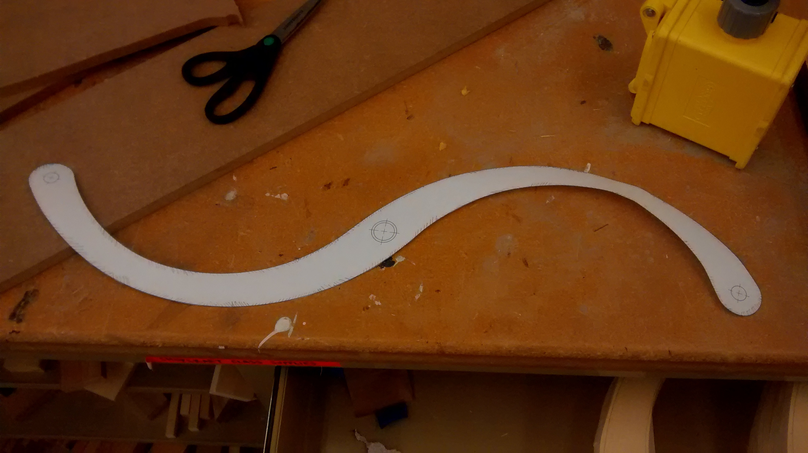
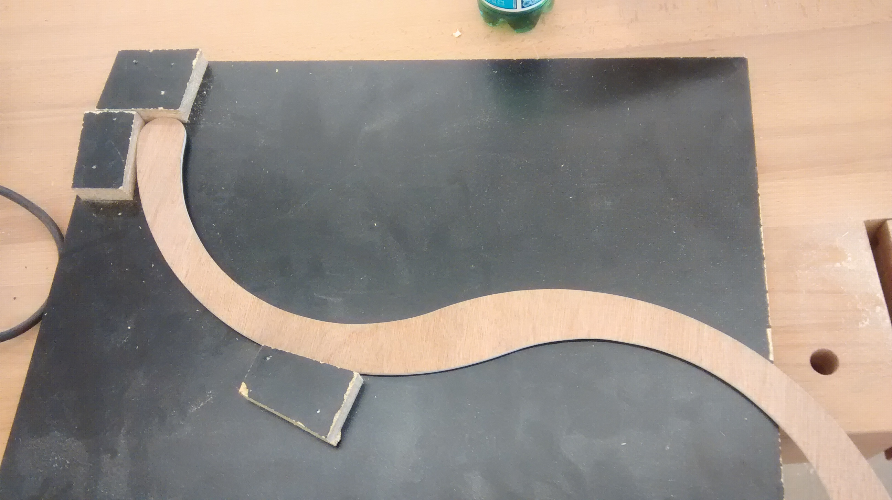
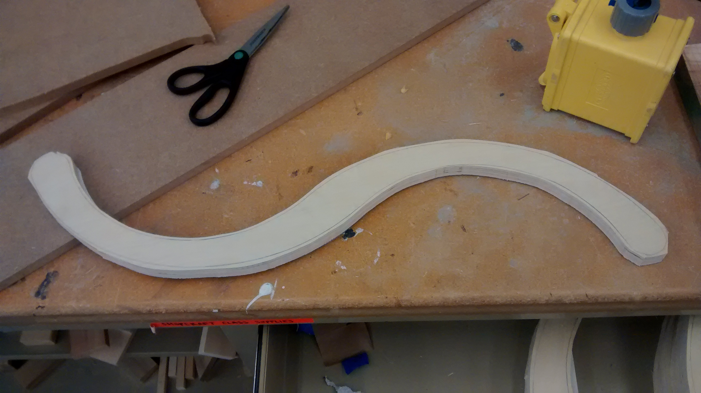
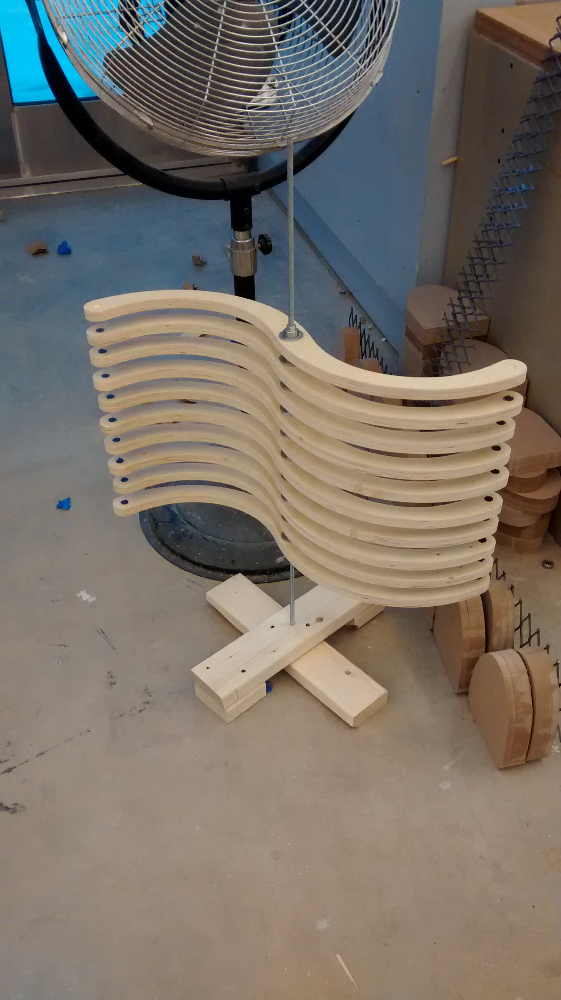

I was in an art class last quarter, taught by Hannah Givler.
This project is called "Module Matters". The prompt is to make a reproducible module that can be used as a building block or an integral part of a sculpture.
Initially I was doing a bunch of research on 3-D tiling, but I got distracted by magnets and started thinking about cool magnetic things instead. After some excited discussion with my friend Rachel I decided to CAD up a swingy arm thing with magnets. The basic idea is that I have a stack of rotating arms with magnets in their ends - this causes them to be loosely coupled in that strange magnetic way. Then when you move any of the arms, the others move with it. It's reminiscent of the Magnetic Wave Machine at the Exploratorium.
I printed out a template from SolidWorks and traced that onto a scrap piece of lauan.

I cut it out with a bandsaw, then sanded it down. Then I nailed a few pieces of scrap together, using the template as a template, to make a quick jig so I can drill holes precisely.

Then I traced the template 10 times onto a 2'x4' piece of 3/4" plywood, and cut them all out with a bandsaw.

Then I used the template to route out the pieces smoothly, before putting them in the drilling jig to make the pockets for the magnets and bearings. I used skateboard bearings, because they're cheap and easy to find. They take 8mm axles, which is just a smidge bigger than the 5/16" threaded rod I used for the axle. The arms were spaced out with washers between the bearings and secured with a nut on each end.
Here is some video of the first few arms, hanging out in the joining table:
I hadn't really thought about how I would mount the piece. After a discussion with my professor I decided to cobble together some 2x4's and call it a day. I'm not proud of that, but the truth is the truth.
